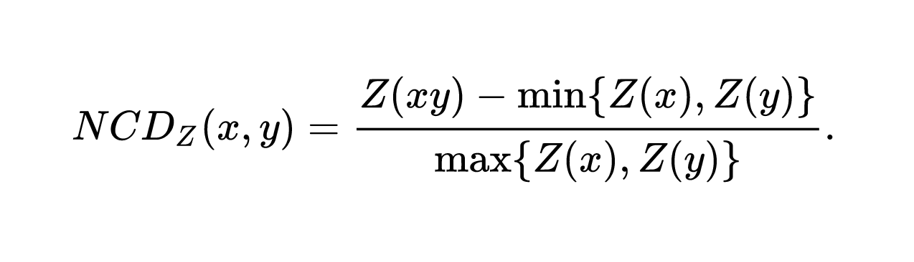

Cyborg Teams
Training Machines
to be Contributors
Stef Walter
Red Hat
Cyborg Teams
A team that is part human, part machine
of modern history ...
of unsolved problems
past a certain complexity point
MACHINES!
"But we use machines!"
but in the productivity statistics.
Cyborg Teams
Machines as contributors, not tools
We speak "machine"!
This is why its a low hanging fruit
Case Study
a Linux session in a web browser
| 90+ APIs: File, Command, REST, DBus, Socket | ||||
|---|---|---|---|---|
| abrt | AppStream | apt-get | atomic | Candlepin /candlepin/ |
| chpasswd | CloudForms | cryptsetup | curl | dbus-daemon |
| device-mapper | docker-storage-setup | docker | e2fsprogs | etcd |
| /etc/kdump.conf | /etc/passwd | firewalld | FreeIPA | GnuTLS |
| GSSAPI | hostnamed | ipa-client | ipa-client | iproute |
| iptables | iscsi-tools | journalctl | kdump | klist |
| krb5 | Kubernetes /api/ | lastlog | libvirt | loginctl |
| lvm | mdadm | NetworkManager | NetworkManager-team | oddjob |
| Openshift /oapi/ | Openshift OAuth2 | openssl | ostree | oVirt /api/ |
| PackageKit | passwd | PCP | PolicyKit | /proc/meminfo... |
| /proc/mounts | /proc/net/dev... | procps-ng | /proc/stat | pwquality |
| qemu | realmd | rm ... | rpmostreed | rpm |
| selinux-policy-targeted | selinux-utils | setenforce | Setroubleshootd | shadow-utils |
| shutdown | sosreport | ssh-agent | sshd | ssh-keygen |
| ssh | sssd | storaged | subscription-manager | sudo |
| /sys/fs/cgroup | /sys/kernel | /sys/power | systemd | timedated |
| Tuned | udev | UDisks2 | /usr/bin/kubectl | /usr/bin/timedatectl |
| /usr/bin/virt-install | /var/log/wtmp | /var/run/utmp | virsh | who/w |
| xfsprogs | yum |
| 15+ Linuxes and Products |
|---|
| CentOS (7.x, Atomic) |
| Fedora (26, 27, 28, Atomic) |
| Ubuntu (stable, 16.04) |
| RHEL (7.4, 7.5, Extras, Atomic) |
| Debian (stable, testing) |
| Openshift |
| RHEV Hypervisor |
| Cloudforms |
| 3 maintained branches |
|---|
| master |
| rhel-7.5 |
| rhel-7.4 |
| 5 browsers |
|---|
| Firefox |
| Google Chrome |
| Internet Explorer |
| Safari |
| Edge |
Release every two weeks
92 × 16 × 5 × 3 × 50
Cyborg Teams
Machines as team members
- Bots own mundane work
- Humans train the bots
- Bots learn from humans
- Bots ship Cockpit
- Bots as committers
- Pair programming with bots
- Team stops without bots
Bots own mundane work


$ make po/cockpit.pot
$ make upload-pot
$ make download-po
$ git add po/
$ git checkout -b po-refresh-xxx
$ git commit -m "po: Update from Fedora Zanata"
$ git push cockpitous po-refresh-xxx


Tests: 443,040 VMs: 558,413
$ zcat tests-train-1.jsonl.gz | wc
867590 67669917 1317326557
$ zgrep -f '"failure"' tests-train-1.jsonl.gz | wc
12407 2142463 86009034
Humans train the bots

$ git shortlog --summary -- bots/ test/
Marius Vollmer
Dominik Perpeet
Peter Volpe
Stef Walter
Martin Pitt
Jan Scotka
Lars Karlitski
Subin M
Marek Libra
Andreas Nilsson
Matej Marusak
Stephen Gallagher
...Bots learn from humans


Bots ship Cockpit
Human signs a tag in git
Bots scurry about
- Make tarballs and patches
- Update RPM spec files and Debian control files
- Release preview builds
- Update and push Fedora packages
- Upload packages into Ubuntu
- Upload packages into Debian
- Upload tarballs
- Container rebuilds on Docker Hub
- Online documentation update
Bots as committers

$ git shortlog -ns | head -n10 | cut -c8-30 | nl | grep Cockpit
4 CockpituousPair programming with bots

Team stops without bots
Rules
Behavior is driven by two forces
- Driving forces
Push you in a specific direction - Restraining forces
Prevent you from going there
Second: Increase the driving forces
Laws of Cyborg Teams
- Teaching a machine must be
as easy as teaching a human - Machines must produce feedback
into the team's workflow - A human should be able to
impersonate a machine, and
a machine impersonate a human
Tests: The Soul of a Robot
Teaching machines right and wrong, good and evil
Techniques
Don't assume bots can't
Moravec's Paradox
Not both at the same time
Don't feel bad about making them do it
They can do the dirty work
you’re doing it wrong
you're doing it wrong
you're doing it wrong
must be able to fix it rapidly
contributable by anyone on the team
that's unique to the team
are usually what you'll end up with
faster than deliverables?
Not just a tool to help humans with their work
Machine Learning
Any sufficiently complete testing system will be "plagued" by test flakes

ML techniques in use
- Term Frequency - Inverse Document Frequency
- Normalized Compression Distance
- DBSCAN unsupervised clustering
- K-nearest Neighbors classification
Term Frequency - Inverse Document Frequency
# ----------------------------------------------------------------------
# testTeam (check_networking_team.TestNetworking)
#
NAME UUID TYPE DEVICE
System eth0 5fb06bd0-0bb0-7ffb-45f1-d6edd65f3e03 802-3-ethernet eth0
virbr0 82404faf-cb6b-4f4c-8eb6-65fc1a2ff8da bridge virbr0
System eth1 9c92fad9-6ecb-3e6c-eb4d-8a47c6f50c04 802-3-ethernet --
52:54:01:00:00:03 -> eth2
52:54:01:00:00:03 -> eth2
52:54:01:00:00:04 -> eth3
52:54:01:00:00:04 -> eth3
not ok 139 testTeam (check_networking_team.TestNetworking) duration: 106s
Traceback (most recent call last):
File \"/build/cockpit/bots/../test/verify/check-networking-team\", line 81, in testTeam
b.wait_present(\"#network-interface-slaves tr[data-interface='%s']\" % iface1)
File \"/build/cockpit/test/common/testlib.py\", line 230, in wait_present
return self.wait_js_func('ph_is_present', selector)
File \"/build/cockpit/test/common/testlib.py\", line 224, in wait_js_func
return self.phantom.wait(\"%s(%s)\" % (func, ','.join(map(jsquote, args))))
File \"/build/cockpit/test/common/testlib.py\", line 821, in
return lambda *args: self._invoke(name, *args)
File \"/build/cockpit/test/common/testlib.py\", line 847, in _invoke
raise Error(res['error'])
Error: timeout
Wrote TestNetworking-testTeam-rhel-7-127.0.0.2-2601-FAIL.png
Wrote TestNetworking-testTeam-rhel-7-127.0.0.2-2601-FAIL.html
Journal extracted to TestNetworking-testTeam-rhel-7-127.0.0.2-2601-FAIL.log
Journal extracted to TestNetworking-testTeam-fedora-26-127.0.0.2-2602-FAIL.log # testTeam (check_networking_team.TestNetworking)
NAME UUID TYPE DEVICE
System eth000 000fb000bd000-000bb000-000ffb-000f000-d000edd000f000e000 000-000-ethernet eth000
virbr000 000faf-cb000b-000f000c-000eb000-000fc000a000ff000da bridge virbr000
System eth000 000c000fad000-000ecb-000e000c-eb000d-000a000c000f000c000 000-000-ethernet --
File "check-networking-team", line 000, in testTeam
b.wait_present("#network-interface-slaves tr[data-interface='%s']" % iface000)Normalized Compression Distance
Z = lambda v: len(zlib.compress(v))DBSCAN
Density-based spatial clustering of applications with noise

k-nearest neighbor

I want!
$ bots/image-download --state tests-learn-1.gz
...
$ bots/learn-tests --dry
Loading existing tests data
14208: Items to train
...
100933632: Computed distances in 1181 seconds on 32 cores
332: Clusters (13962 items, 246 noise)
$ cat example-test.log | bots/tests-policy fedora-27
...
...
# Flake probability: 100.0% (neural network)
# Flake likely 58.6% (clustering)
Add tests to my Fedora package
Run simple tests on GitHub pull requests
Add .travis.yml and use Travis CI
Run a full userland for integration tests
Semaphore CI and example
github.com/cockpit-project/cockpituous
Run my CI in Openshift
Contact CentOS CI for an account
Copy pipelines built in Openshift/Jenkins
Continuous Infra team at Red Hat, speaking at DevConf
Run VMs in Openshift for testing
Look at how Linux System Roles did it really simply
Bots for delivery, dist-git, Bodhi, Koji
Look at cockpit/release container
Try out Machine Learning
Use scikit-learn
Cyborg Teams
Happy humans, tired machines
Questions?
| plus.google.com/+RedHat | facebook.com/redhatinc |
| linkedin.com/company/red-hat | twitter.com/RedHat |
| youtube.com/user/RedHatVideos |
Credits:
Machines: tt2times on Flickr
Pear Programming: mendhak on Flickr
Shut up and Take my Money: liliana_von_k on Flickr
Clusters: Chire on Wikipedia